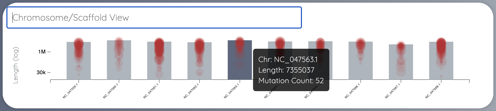
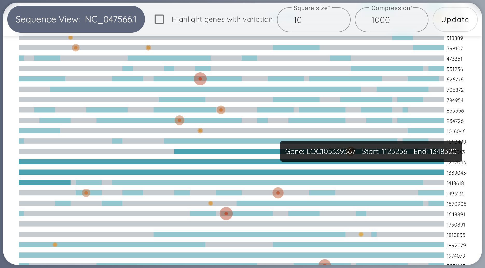
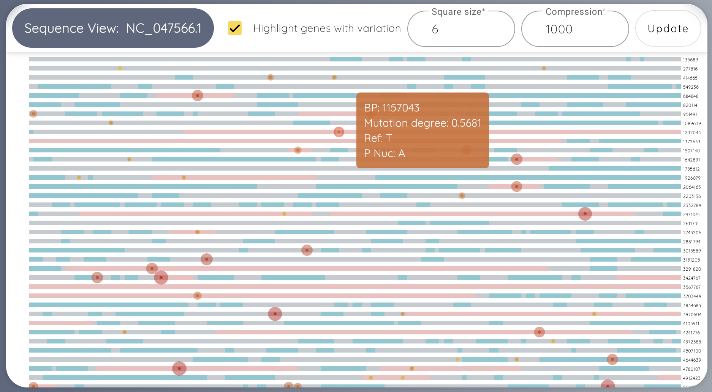
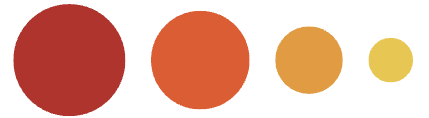
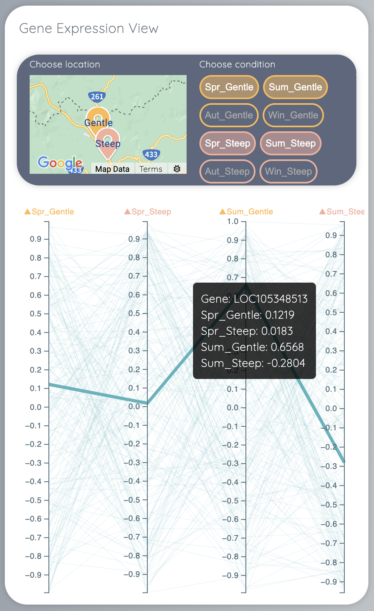
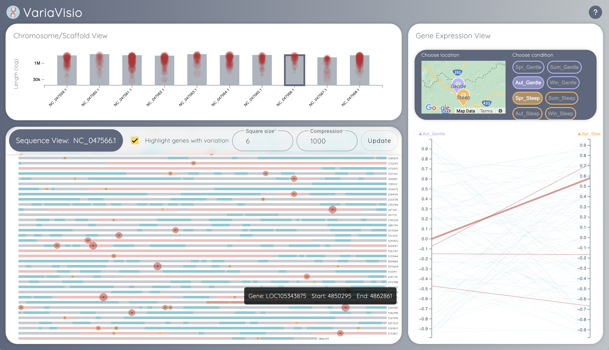

What is VariaVisio
VariaVisio is a web application that allows users to visualize and analyze population
genomic data from different locations. The application is built using Angular, TypeScript,
and D3.js.
Chromosome/Scaffold View

The chromosome/scaffold view shows genetic information in a straight line format. Each
chromosome or scaffold is like a bar on the chart, and its length on the chart represents
its actual length in DNA.
-
Chromosome/Scaffold Bars: Each bar represents a chromosome or scaffold.
The length of the bar shows how long that chromosome or scaffold is.
-
Red Circles: Mutations, like changes in the DNA called SNPs, are shown
as red circles on the chart. Bigger circles mean there are more mutations in that area.
-
Details: When you move your mouse over a bar or circle:
- Chromosome/Scaffold Info: You see how long that chromosome or scaffold is.
- Mutation Count: You see how many mutations (SNPs) are there.
- Mutation Position: It shows where exactly these mutations are located.
-
Mutation Degree: It tells you how important or big these mutations are, shown by
the size of the circle.
Sequence View

The sequence view shows the complete sequence of a chromosome or scaffold, which can let you
check the specific position of the mutation. The sequence is compressed using the letters A,
T, C, and G into blocks. By default, 1000 base pairs are compressed into one block for
visualization purposes. You can customize the size of the blocks and the level of
compression to navigate the sequence more effectively. At the end of the sequence, you can
check the position of the sequence.

-
Setting Panel: You can customize the size of the blocks and the
compression degree of the sequence.
-
Gray sequence
:
The gray sequence is represented as non-coding gene.
-
Blue sequence
:
The blue sequence is represented as gene.
-
Circles: Mutations, like changes in the DNA called SNPs, are shown as
red circles on the chart. Bigger

and color more red circles mean there are more mutations in that area.
-
Details: When you move your mouse over the gene sequence or circle:
- Gene Info: You see the gene name and its position.
- Mutation Position: It shows where exactly these mutations are located.
-
Mutation Degree: It tells you how important or big these mutations are, shown by
the size of the circle.
Gene Expression View

The gene expression view illustrates how genes are expressed under various conditions.
Here's a refined description of its features:
-
Map View: Initially, you'll see a map view displaying the locations of different
samples. Each location is marked with a pin. Clicking on a pin reveals the specific
conditions associated with that location.
-
Condition Buttons: After selecting a location, you can click on condition buttons to
access the Principal Component (PC) view.
-
PC View: In the PC view:
- Each axis represents a different condition.
- Font color corresponds to the location marked on the map.
-
Each line represents a gene, displaying its expression data across the selected
conditions.
-
Hover Details: Hovering over a gene line provides detailed information about the gene's
expression level under the specified conditions.
This interactive visualization tool allows users to explore gene expression patterns across
various conditions and locations, providing insights into how genes behave under different
experimental setups.
Interaction between Sequence View and Gene Expression View

The sequence view and gene expression view are interconnected to facilitate analysis of the
relationship between mutations and gene expression level. When you hover over a gene in the
sequence view:
-
Gene Expression View Highlight: Genes that meet or exceed a certain expression threshold
are highlighted in the gene expression view.
-
Mutation Highlight: If a gene has a mutation, its corresponding gene line in the gene
expression view turns red to draw attention to the mutation.